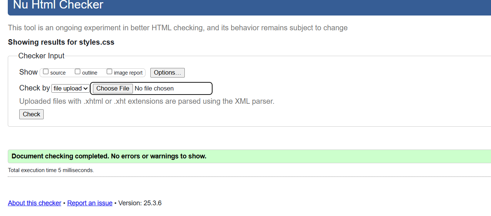

My journey in web development throughout this term has been both challenging and rewarding. Starting with basic HTML structure, I gradually built up my understanding of semantic HTML5 elements and modern CSS techniques. The learning curve was steep initially, especially when dealing with responsive design and CSS Grid layouts.
One of the major challenges I faced was implementing the responsive navigation menu. Through research and experimentation, I learned about media queries and flexible layouts. This experience taught me the importance of mobile-first design and cross-browser compatibility.
Design Decisions
Color Scheme
I chose a clean, professional color palette based on shades of blue (#3498db, #2980b9) and neutral grays (#2c3e50). This combination creates a modern, trustworthy appearance while maintaining good contrast for accessibility.
Typography
The website uses the Segoe UI font family, chosen for its excellent readability across different screen sizes and its modern, professional appearance.
Layout
I implemented different grid layouts for various sections, particularly in the projects page where I used CSS Grid to create a masonry-style layout. The design is fully responsive, adapting seamlessly to different screen sizes.
Validation Reports
HTML Validation Results

CSS Validation Results
.png)
.png)
.png)
.png)
.png)